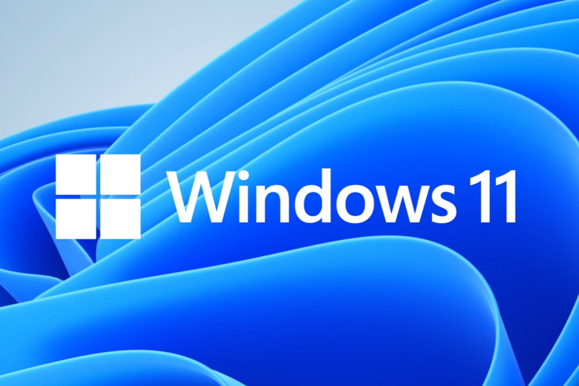

Sistemas Operacionais: Onde baixar o Windows 11 Original?

A segurança cibernética é um tema de crescente preocupação na era digital em que vivemos. Uma das áreas mais críticas para garantir a integridade dos sistemas operacionais é a distribuição confiável de imagens de disco, como as ISOs. O site oficial da Microsoft é a única fonte segura para baixar o sistema, pois passa por rigorosos controles de qualidade.
Por que usar a ISO Oficial?
Baixar diretamente dos servidores da Microsoft garante que você receba um sistema íntegro e pronto para as atualizações de segurança. Evite versões "lite" de sites desconhecidos.
Link oficial para download da ISO do Windows 11, Clica na Imagem abaixo 👇